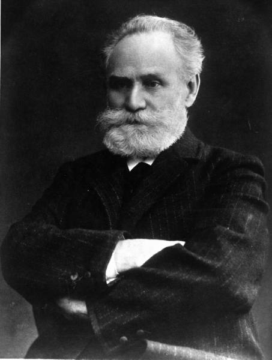

Behaviorism
Background and Overview
Behaviorism dominated experimental psychology for several decades, and its influence can still be felt today. Early work in the field was conducted by John B. Watson at the beginning of the 20th century after important preliminary work by Ivan Pavlov and E. L. Thorndike and was popularised and radicalised in equal measure by B. F. Skinner in the 1950s. Behaviorists rejected the formerly popular introspectionist methods and instead focused on objectively observable, quantifiable events and behavior. Through its objective methods and experimentation, Behaviorism was also largely responsible for establishing psychology as a scientific discipline (Dumper et al., n.d.)
Classical Conditioning
Learning that occurs when a neutral, novel stimulus becomes associated with a natural, unconditioned stimulus that produces a behaviour / desired response.
Early work in the field was conducted by the Russian physiologist Ivan Pavlov (1849-1936). Pavlov conducted a series of experiments in which dogs were exposed to a sound immediately before receiving their food and recorded the amount of the dogs’ salivation. Initially the dogs salivated only when they saw or smelled the food, but after several pairings of the sound and the food, the dogs began to salivate as soon as they heard the sound without being exposed to food. The animals had learned to associate the sound with the food that followed. Pavlov had identified a fundamental associative learning process called classical conditioning (Stangor & Walina, 2014).